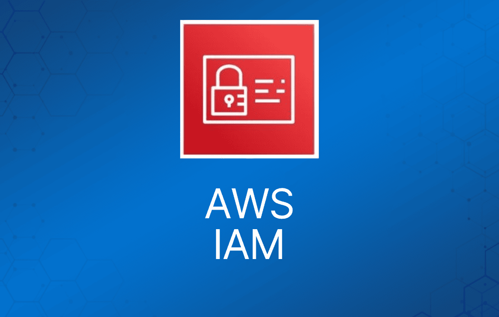
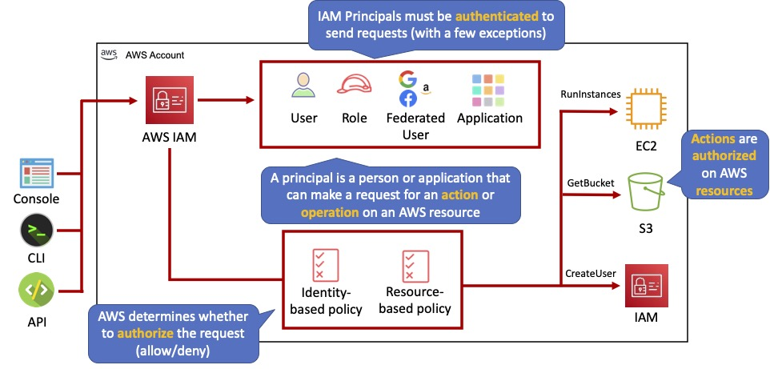
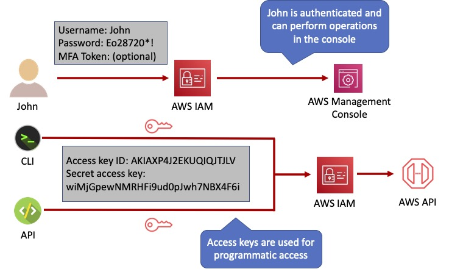
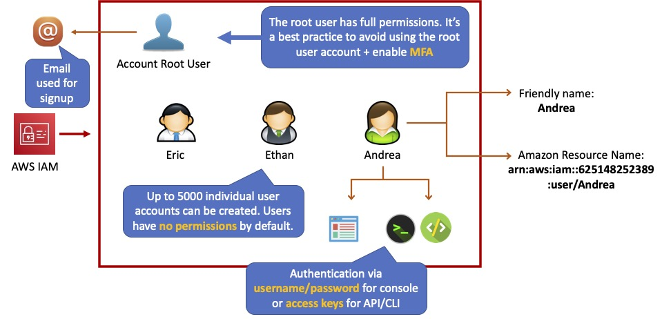
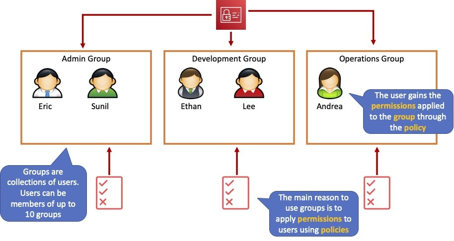
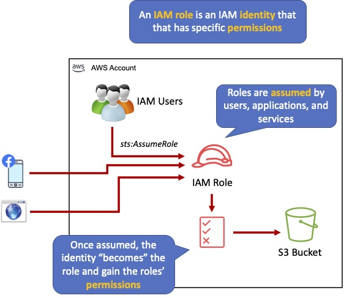
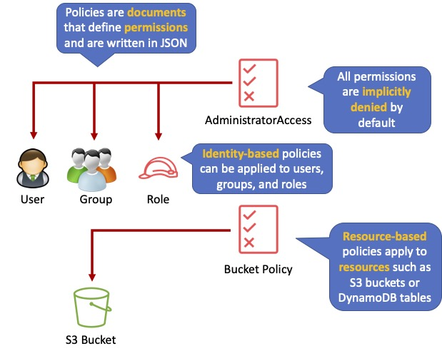
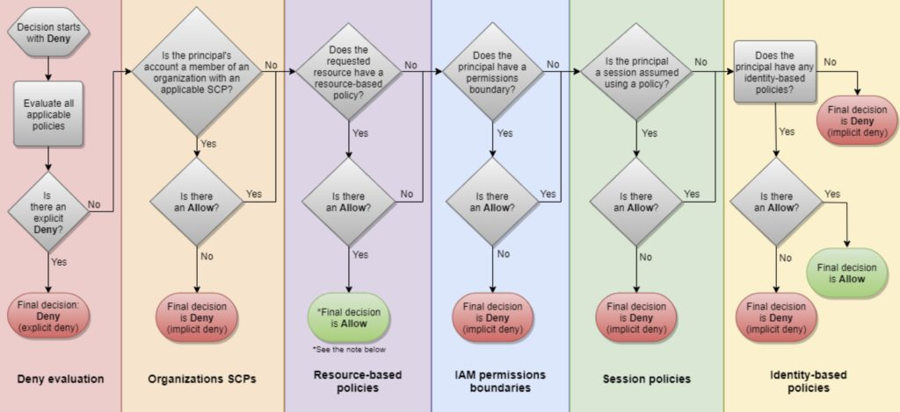
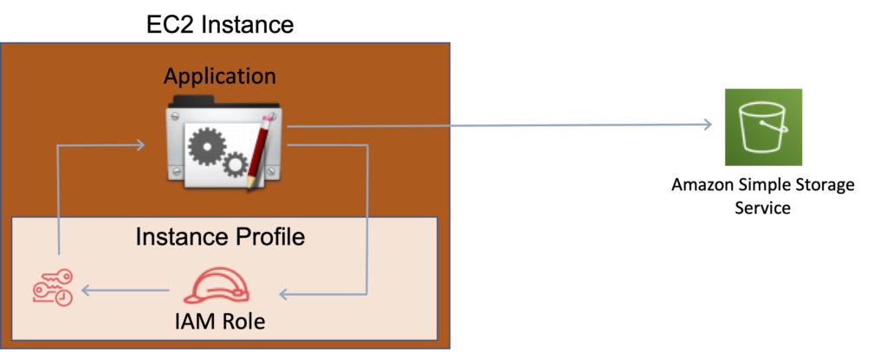
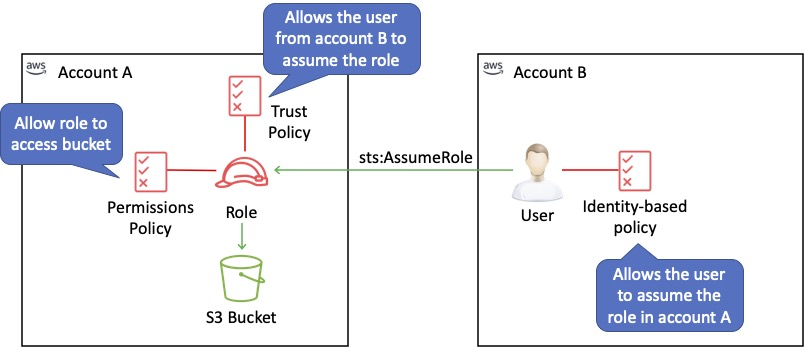

IAM 即 AWS Identity and Access Management（身份与访问管理）服务。
IAM 用于安全地控制个人和组对 AWS 资源的访问。
IAM 让为多个用户提供对 AWS 资源的安全访问变得简单。
IAM 可用于管理：
- 用户（Users）。
- 组（Groups）。
- 访问策略（Access policies）。
- 角色（Roles）。
- 用户凭证。
- 用户密码策略。
- 多因素认证（MFA）。
- 用于编程访问（CLI）的 API 密钥。
提供对 AWS 账户的集中式控制。
支持对 AWS 账户的共享访问。
默认情况下，新创建的用户对任何 AWS 服务都没有访问权限——他们只能登录 AWS 控制台。
必须显式授予权限，用户才能访问某个 AWS 服务。
IAM 用户是被授予了 AWS 账户访问权限的个人。
每个 IAM 用户有三个主要组成部分：
- 用户名。
- 密码。
- 访问各种资源的权限。
使用 IAM 可以应用细粒度权限。
可以为用户分配各自的安全凭证，例如访问密钥、密码和多因素认证设备。
IAM 不用于应用程序级别的身份认证。
可以配置身份联合（Identity Federation，包括 AD、Facebook 等），无需创建 IAM 用户账户即可安全访问 AWS 账户中的资源。
可以为 AWS 账户及账户下的单个用户启用/强制使用多因素认证（MFA）。
MFA 使用一种认证设备，持续生成随机的六位一次性认证码。
可以通过以下三种方式使用 MFA 设备进行认证：
- 通过 AWS Management Console——系统会提示用户输入用户名、密码和认证码。
- 使用 AWS API——在 IAM 策略中添加限制，开发人员可以请求临时安全凭证，并在 AWS STS API 请求中传递 MFA 参数。
- 使用 AWS CLI，通过 STS 获取临时安全凭证（aws sts get-session-token）。
想了解如何设置 MFA？在下面简短的 AWS Hands-on Labs 视频教程中，你将学习如何为 AWS Root 账户激活虚拟多因素认证（MFA）。在不到 5 分钟的时间里，我们涵盖：删除 Root 账户访问密钥和激活多因素认证。
最佳实践是为所有用户使用 MFA，并为所有特权用户使用 U2F 或硬件 MFA 设备。
IAM 是通用的（全局的），不区分区域。
IAM 是最终一致性的（eventually consistent）。
IAM 在全球多个数据中心之间复制数据。
“root 账户”是你在创建 AWS 账户时建立的账户。它拥有完整的管理员访问权限，也是默认情况下唯一拥有此权限的账户。
最佳实践是除了账单相关操作外，不要使用 root 账户。
Power user 访问权限允许除 IAM 中组和用户管理之外的所有权限。
临时安全凭证由 AWS 访问密钥 ID、秘密访问密钥和安全令牌组成。
IAM 可以分配临时安全凭证，为用户提供对服务/资源的临时访问。
登录时，除了用户名和密码外，还必须提供账户 ID 或账户别名。
登录 URL 包含账户 ID 或账户别名，例如：
https://My_AWS_Account_ID.signin.aws.amazon.com/console/.
或者，你也可以在以下 URL 登录并手动输入账户 ID 或别名：
https://console.aws.amazon.com/.
IAM 与许多不同的 AWS 服务集成。
IAM 支持 PCI DSS 合规。
AWS 建议使用 AWS SDK 对 IAM 进行编程式 API 调用。
不过，你也可以使用 IAM Query API 直接调用 IAM Web 服务。
IAM 要素
主体（Principals）：
- 可以对 AWS 资源执行操作的实体。
- 你的管理员 IAM 用户是你的第一个主体。
- 你可以允许用户和服务代入（assume）角色。
- IAM 支持联合用户（federated users）。
- IAM 支持编程访问，允许应用程序访问你的 AWS 账户。
- IAM 用户、角色、联合用户和应用程序都是 AWS 主体。
请求（Requests）：
- 主体通过控制台、CLI、SDK 或 API 发送请求。
- 请求包括：
- 主体想要执行的操作（或操作命令）。
- 执行操作所针对的资源。
- 主体信息，包括发出请求的环境。
- 请求上下文——AWS 收集的请求信息：
- 主体（请求者）。
- 与主体关联的聚合权限。
- 环境数据，如 IP 地址、user agent、SSL 状态等。
- 资源数据，即与所请求资源相关的数据。
认证（Authentication）：
- 发送请求的主体必须经过认证才能向 AWS 发送请求。
- 要从控制台认证，必须使用用户名和密码登录。
- 要从 API 或 CLI 认证，必须提供访问密钥和秘密密钥。
授权（Authorization）：
- IAM 使用请求上下文中的值检查匹配的策略，并决定允许还是拒绝该请求。
- IAM 策略以 JSON 文档形式存储在 IAM 中，指定允许或拒绝的权限。
- IAM 策略可以是：
- 基于用户（身份）的策略。
- 基于资源的策略（resource-based policies）。
- IAM 会检查与请求上下文匹配的每个策略。
- 如果某个策略中包含拒绝操作，IAM 会拒绝请求并停止评估（显式拒绝）。
- 评估逻辑：
- 默认情况下，所有请求都被拒绝（隐式拒绝）。
- 显式允许会覆盖隐式拒绝。
- 显式拒绝会覆盖任何显式允许。
- 默认情况下，只有 root 用户可以访问账户中的所有资源。
操作（Actions）：
- 操作由服务定义。
- 操作是你可以对资源做的事情，例如查看、创建、编辑、删除。
- 任何未被显式允许的资源操作都会被拒绝。
- 要允许主体执行某个操作，必须在应用于该主体或受影响资源的策略中包含必要的操作。
资源（Resources）：
- 资源是存在于某个服务中的实体。
- 例如 EC2 实例、S3 存储桶、IAM 用户和 DynamoDB 表。
- 每个 AWS 服务都定义了一组可以对资源执行的操作。
- AWS 批准请求中的操作后，这些操作就可以对账户中的相关资源执行。

认证方法
控制台密码：
- 用户可输入该密码登录交互式会话，如 AWS Management Console。
- 你可以允许用户更改自己的密码。
- 你可以先禁用所有用户更改密码的选项，再使用 IAM 策略为选定的 IAM 用户授予更改密码的权限，从而只允许他们修改密码。
访问密钥（Access Keys）：
- 由 access key ID 和 secret access key 组合而成。
- 一个用户同一时间最多可分配两个处于激活状态的访问密钥。
- 在程序代码中使用 API，或在命令行中使用 AWS CLI 或 AWS PowerShell 工具时，可使用它们对 AWS 发起编程式调用。
- 你可以创建、修改、查看或轮换访问密钥。
- 创建时 IAM 会返回 access key ID 和 secret access key。
- secret access key 仅在创建时返回一次，如果丢失必须创建新密钥。
- 请确保 access key 和 secret access key 被安全存储。
- 可以通过 IAM 策略（而非控制台）允许用户更改自己的密钥。
- 你可以禁用用户的访问密钥，使其无法用于 API 调用。
服务器证书：
- 可用于向某些 AWS 服务进行身份认证的 SSL/TLS 证书。
- AWS 建议使用 AWS Certificate Manager (ACM) 来配置、管理和部署服务器证书。
- 仅在必须支持 ACM 不支持的区域中的 HTTPS 连接时才使用 IAM。
下图展示了 IAM 可用的不同认证方法：

IAM 用户
IAM 用户是代表个人或服务的实体。
可以分配：
- 用于对 AWS API、CLI、SDK 及其他开发工具进行编程访问的 access key ID 和 secret access key。
- 用于访问管理控制台的密码。
默认情况下，用户无法访问账户中的任何内容。
账户 root 用户凭证是创建账户时使用的电子邮件地址和密码。
root 账户拥有完整的管理权限，且这些权限无法被限制。
root 账户最佳实践：
- 不要使用 root 用户凭证。
- 不要共享 root 用户凭证。
- 创建 IAM 用户并根据需要分配管理权限。
- 启用 MFA。
可以创建代表应用程序的 IAM 用户，这些被称为“服务账户”。
每个 AWS 账户最多可有 5000 个用户。
每个用户账户都有一个友好名称和一个 ARN，用于在整个 AWS 中唯一标识该用户。
同时还会创建一个唯一 ID，仅在你通过 API、Tools for Windows PowerShell 或 AWS CLI 创建用户时返回。
应为每个用户创建独立的 IAM 账户（最佳实践是不共享账户）。
Access Key ID 和 Secret Access Key 与密码不同，不能用于登录 AWS 控制台。
Access Key ID 和 Secret Access Key 只能生成一次，丢失后必须重新生成。
可以定义密码策略，强制密码长度、复杂度等（适用于所有用户）。
可以使用 IAM 策略允许或禁止修改密码的能力。
访问密钥和密码应定期更换。

组（Groups）
组是用户的集合，可以附加策略。
组不是身份，不能在 IAM 策略中被标识为主体。
使用组为用户分配权限。
分配权限时遵循最小权限原则。

角色（Roles）
角色在创建后由可信实体“代入（assume）”，并定义了一组用于发起 AWS 服务请求的权限。
使用 IAM 角色，你可以在不使用永久凭证（如用户名和密码）的情况下，为用户和服务将权限委托给资源。
IAM 用户或 AWS 服务可以代入角色，获取可用于发起 AWS API 调用的临时安全凭证。
你可以使用角色进行委托。
角色本身没有关联任何凭证（密码或访问密钥）。
IAM 用户可以临时代入角色，以获得执行特定任务的权限。
角色可以分配给使用外部身份提供商登录的联合用户。
临时凭证主要与 IAM 角色一起使用，并会自动过期。
角色可以通过控制台临时代入，也可以通过 AWS CLI、Tools for Windows PowerShell 或 API 以编程方式代入。
IAM 角色与 EC2 实例：
- IAM 角色可通过实例配置文件（instance profiles），为运行在 EC2 实例上的应用程序授予发起 AWS API 请求的权限。
- 一个 EC2 实例同一时间只能分配一个角色。
- 角色可以在创建 EC2 实例时或之后的任何时间分配。
- 使用 AWS CLI 或 API 时，必须手动创建实例配置文件（通过控制台则是自动且透明的）。
- 应用程序从实例元数据中检索临时安全凭证。
角色委托：
- 创建一个带有两个策略的 IAM 角色：
- 权限策略（Permissions policy）——为角色使用者授予对资源所需的权限。
- 信任策略（Trust policy）——指定允许代入该角色的可信账户。
- 通配符（*）不能指定为主体。
- 还必须为可信账户中的用户附加权限策略。

策略（Policies）
策略是定义权限的文档，可应用于用户、组和角色。
策略文档使用 JSON 编写（由属性和值组成的键值对）。
默认情况下，所有权限都被隐式拒绝。
应用限制最严格的策略。
IAM 策略模拟器（IAM policy simulator）是一个帮助你理解、测试和验证访问控制策略效果的工具。
Condition 元素可用于应用进一步的条件逻辑。

内联策略与托管策略
共有 3 种类型的策略：
- 托管策略（Managed policies）。
- 客户托管策略（Customer managed policies）。
- 内联策略（Inline policies）。
托管策略（Managed Policy）：
- 由 AWS 创建和管理。
- 用于基于工作职能的常见使用场景。
- 省去自己创建策略的麻烦。
- 可附加到同一 AWS 账户内或跨账户的多个用户、组或角色。
- 无法更改所分配的权限。
客户托管策略（Customer Managed Policy）：
- 你在自己的 AWS 账户中创建和管理的独立策略。
- 可附加到多个用户、组和角色——但仅限你自己的账户内。
- 可以通过复制现有托管策略再进行自定义来创建。
- 推荐在现有 AWS 托管策略无法满足环境需求时使用。
内联策略（Inline Policy）：
- 内联策略嵌入在其所应用的用户、组或角色中。
- 实体与策略之间是严格的 1:1 关系。
- 删除嵌入了内联策略的用户、组或角色时，该策略也会一并删除。
- 在大多数情况下，AWS 建议使用托管策略而非内联策略。
- 当你希望确保策略中的权限不会被意外分配给其他任何用户、组或角色时，内联策略很有用。
AWS 托管策略与客户托管策略
AWS 托管策略是由 AWS 创建和管理的独立策略。
独立策略意味着该策略拥有自己的 Amazon Resource Name (ARN)，其中包含策略名称。
AWS 托管策略旨在为许多常见使用场景提供权限。
你无法更改 AWS 托管策略中定义的权限。
一些 AWS 托管策略是为特定工作职能设计的。
针对特定工作的 AWS 托管策略包括：
- Administrator。
- Billing。
- Database Administrator。
- Data Scientist。
- Developer Power User。
- Network Administrator。
- Security Auditor。
- Support User。
- System Administrator。
- View-Only User。
你可以创建在自己的 AWS 账户中管理的独立策略，我们称之为客户托管策略。
然后可以将这些策略附加到 AWS 账户中的多个主体实体。
将策略附加到主体实体时，你就赋予了该实体策略中定义的权限。
IAM 策略评估逻辑
默认情况下，所有请求都被隐式拒绝。（换句话说，默认情况下 AWS 账户 root 用户拥有完全访问权限。）
基于身份或基于资源的策略中的显式允许会覆盖此默认值。
如果存在权限边界（permissions boundary）、Organizations SCP 或会话策略，它们可能会用隐式拒绝覆盖允许。
任何策略中的显式拒绝都会覆盖任何允许。
理解该逻辑需要了解以下几个概念：
- 基于身份的策略（Identity-based policies）——附加到 IAM 身份（用户、用户组或角色），并为 IAM 实体（用户和角色）授予权限。
- 基于资源的策略（Resource-based policies）——为指定为主体的主体（账户、用户、角色或联合用户）授予权限。
- IAM 权限边界（IAM permissions boundaries）——权限边界是一项高级功能，用于设置基于身份的策略可以为 IAM 实体（用户或角色）授予的最大权限。
- AWS Organizations 服务控制策略（SCPs）——Organizations SCP 指定组织或组织单元（OU）的最大权限。会话策略（Session policies）——会话策略是高级策略，在以编程方式为角色或联合用户创建临时会话时作为参数传入。
以下流程图详细说明了 IAM 策略评估逻辑：

IAM 实例配置文件（Instance Profiles）
实例配置文件是 IAM 角色的容器，可用于在 EC2 实例启动时将角色信息传递给实例。
一个实例配置文件只能包含一个 IAM 角色，但一个角色可以被包含在多个实例配置文件中。

你可以使用以下 AWS CLI 命令在 AWS 账户中操作实例配置文件：
- 创建实例配置文件：aws iam create-instance-profile
- 将角色添加到实例配置文件：aws iam add-role-to-instance-profile
- 列出实例配置文件：aws iam list-instance-profiles、aws iam list-instance-profiles-for-role
- 获取实例配置文件信息：aws iam get-instance-profile
- 从实例配置文件中移除角色：aws iam remove-role-from-instance-profile
- 删除实例配置文件：aws iam delete-instance-profile
AWS Security Token Service
AWS Security Token Service (STS) 是一项 Web 服务，允许你为 IAM 用户或你认证的用户（联合用户）请求临时的、权限受限的凭证。
默认情况下，AWS STS 作为全局服务提供，所有 AWS STS 请求都发往单一端点 https://sts.amazonaws.com
你可以选择将 AWS STS 请求发送到任何区域的端点（可降低延迟）。
凭证始终全局有效。
STS 支持 AWS CloudTrail，它会记录你的 AWS 账户的 AWS 调用并将日志文件传送到 S3 存储桶。
临时安全凭证的工作方式与 IAM 用户使用的长期访问密钥凭证几乎相同，区别如下：
- 临时安全凭证是短期的。
- 可以配置为持续几分钟到几小时不等。
- 凭证过期后，AWS 不再识别它们，也不允许使用它们发起任何 API 请求。
- 临时安全凭证不与用户一起存储，而是动态生成并在用户请求时提供给用户。
- 当临时安全凭证过期时（甚至之前），如果请求用户仍有权限，可以请求新凭证。
STS 的优势包括：
- 你无需在应用程序中分发或嵌入长期 AWS 安全凭证。
- 你可以为用户提供对 AWS 资源的访问，而无需为他们定义 AWS 身份（临时安全凭证是 IAM 角色和身份联合的基础）。
- 临时安全凭证生命周期有限，因此当不再需要时，你无需轮换或显式撤销它们。
- 临时安全凭证过期后无法重用（你可以指定凭证的有效时长，最长不超过上限）。
AWS STS API 操作返回的临时安全凭证包括：
- 一个访问密钥，由 access key ID 和 secret access key 组成。
- 一个会话令牌（session token）。
- 过期时间或有效时长。
- 用户（或用户运行的应用程序）可以使用这些凭证访问你的资源。
使用 STS，你可以通过以下 API 之一请求会话令牌：
- AssumeRole——只能由 IAM 用户使用（可用于 MFA）。
- AssumeRoleWithSAML——可由任何传递了 SAML 认证响应、且该响应表明来自已知（可信）身份提供商认证的用户使用。
- AssumeRoleWithWebIdentity——可由传递了 web 身份令牌、且该令牌表明来自已知（可信）身份提供商认证的用户使用。
- GetSessionToken——可由 IAM 用户或 AWS 账户 root 用户使用（可用于 MFA）。
- GetFederationToken——可由 IAM 用户或 AWS 账户 root 用户使用。
AWS 建议使用 Cognito 与互联网身份提供商进行身份联合。
用户可以来自三个来源。
联合（通常是 AD）：
- 使用 SAML 2.0。
- 基于用户的 AD 凭证授予临时访问权限。
- 无需是 IAM 中的用户。
- 单点登录（SSO）允许用户在不分配 IAM 凭证的情况下登录 AWS 控制台。
与移动应用联合：
- 使用 Facebook/Amazon/Google 或其他 OpenID 提供商登录。
跨账户访问（Cross Account Access）：
- 允许一个 AWS 账户中的用户访问另一个账户中的资源。
- 要在不同账户中发起请求，该账户中的资源必须附加了包含所需权限的基于资源的策略。
- 或者你必须代入该账户中具有所需权限的角色（基于身份的策略）。
STS 有几种使用方式。
场景 1：
- 开发一个 Identity Broker 与 LDAP 和 AWS STS 通信。
- Identity Broker 始终先通过 LDAP 认证，然后再通过 AWS STS 认证。
- 应用程序随后获得对 AWS 资源的临时访问权限。
场景 2：
- 开发一个 Identity Broker 与 LDAP 和 AWS STS 通信。
- Identity Broker 先通过 LDAP 认证，然后获取与用户关联的 IAM 角色。
- 应用程序随后通过 STS 认证并代入该 IAM 角色。
- 应用程序使用该 IAM 角色与服务交互。
跨账户访问（Cross Account Access）
适用于 AWS 客户拥有多个独立 AWS 账户的情况——例如分别用于开发和生产资源。
跨账户访问通过在 AWS Management Console 中轻松切换角色，使在多账户（或多角色）AWS 环境中高效工作变得更加容易。
可以使用你的 IAM 用户名登录控制台，然后将控制台切换到管理另一个账户，而无需输入另一组用户名和密码。
允许一个 AWS 账户中的用户访问另一个账户中的资源。
要在不同账户中发起请求，该账户中的资源必须附加了包含所需权限的基于资源的策略。
或者你必须代入该账户中具有所需权限的角色（基于身份的策略）。

IAM 最佳实践
为保护 AWS 资源，建议遵循以下最佳实践：
- 妥善保管你的 AWS 账户 root 用户访问密钥。
- 使用角色委托权限。
- 授予最小权限。
- 从使用 AWS 托管策略开始配置权限。
- 验证你的策略。
- 使用客户托管策略而非内联策略。
- 使用访问级别（access levels）审查 IAM 权限。
- 为用户配置强密码策略。
- 启用 MFA。
- 为运行在 Amazon EC2 实例上的应用程序使用角色。
- 不要共享访问密钥。
- 定期轮换凭证。
- 移除不必要的凭证。
- 使用策略条件增强安全性。
- 监控 AWS 账户中的活动。